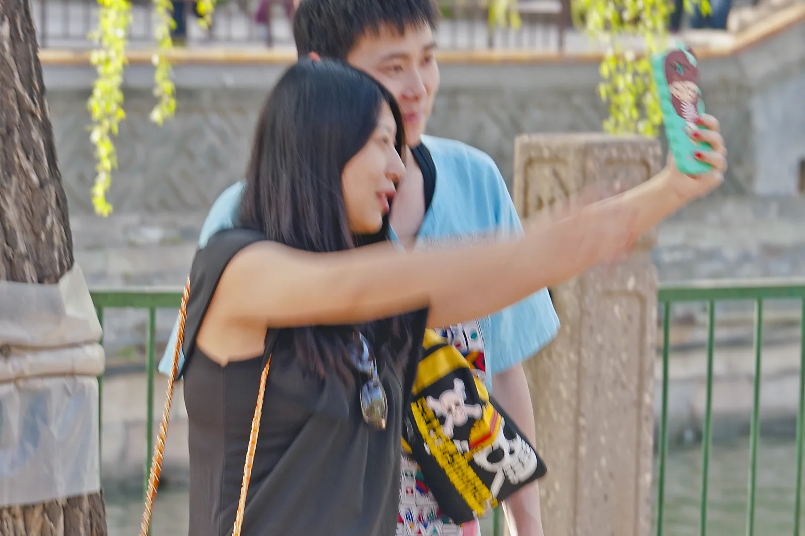
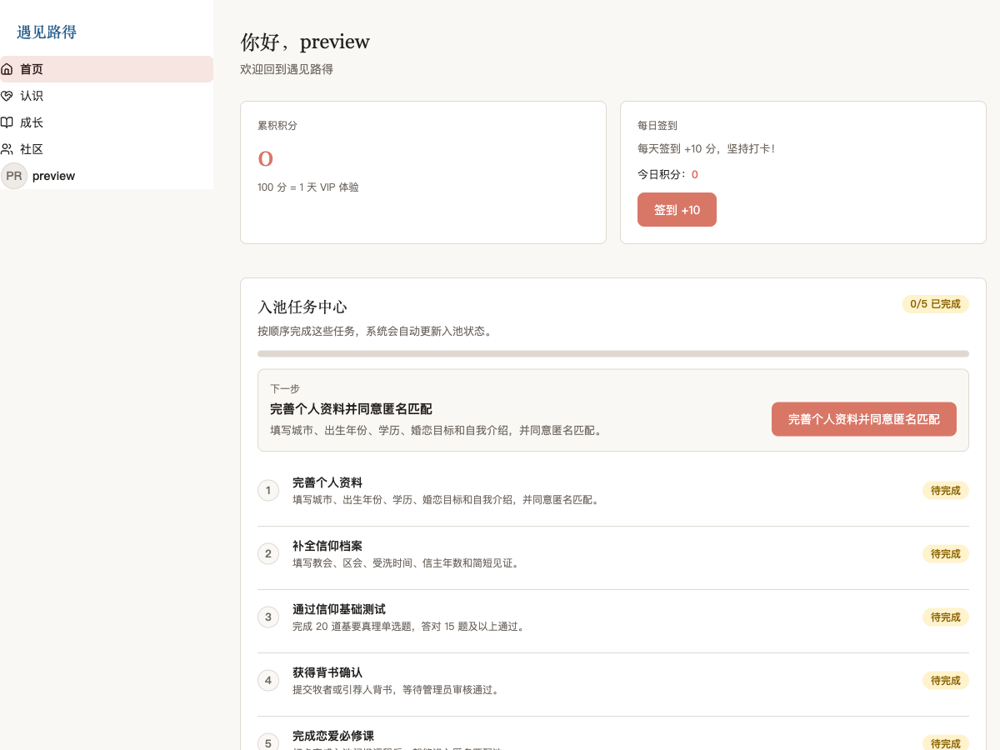

预备自己
课程、教材和信仰测试，让你先形成关于婚姻的共同语言，再进入匹配。

Why Ruth
我们把婚恋看作一段需要预备、辨识与确认的关系旅程。功能不为制造热闹，而是让两个人有依据、有边界地走近。
课程、教材和信仰测试，让你先形成关于婚姻的共同语言，再进入匹配。
完整资料、信仰经历和引荐信息，共同组成比一张照片更立体的认识。
从表达意向到双方确认，每一步都有明确状态，也始终保留诚实退出的边界。
Meet · Learn · Belong
遇见路得把课程、教材、社区和关系流程放在同一段旅程里。你读过什么、如何理解承诺、怎样面对冲突，会慢慢成为两个人真实交流的一部分。
看看成长内容
A shared journey
建立资料与信仰档案，让别人有依据地认识你。
阅读教材、完成课程与测试，形成共同语言。
表达意向，在双方同意后开启彼此沟通。
双方确认关系，让线上状态与真实关系一致。
你往哪里去，我也往哪里去。路得记 1:16
你在哪里住宿，我也在那里住宿。